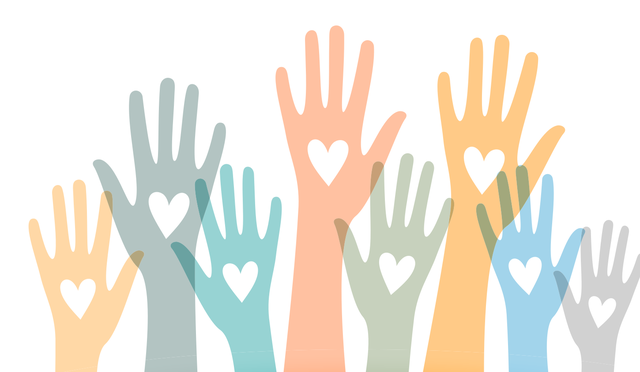
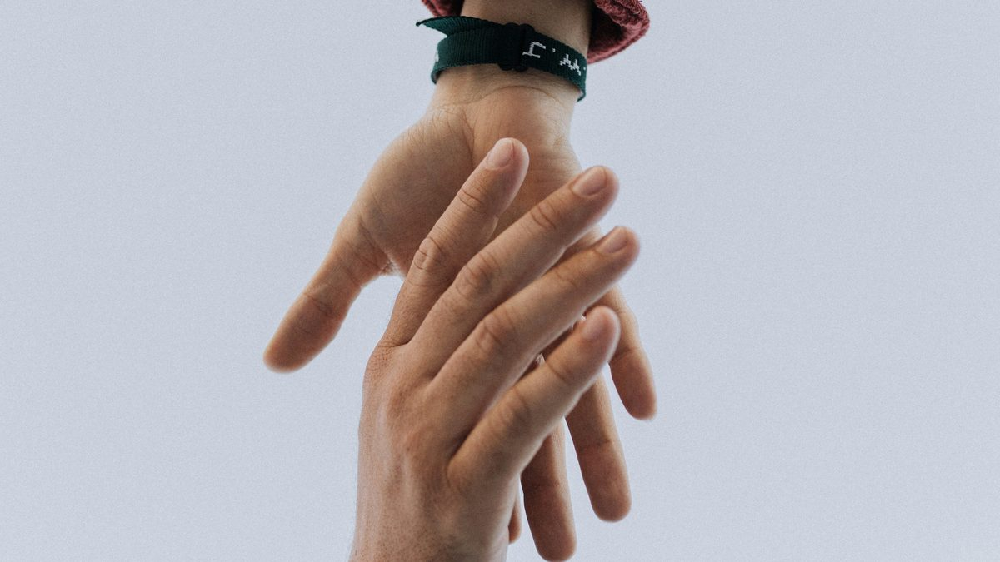

Missão
Transformar realidades por meio da solidariedade e do acesso à educação.

Campanha do agasalho 2026 Estamos recebendo cobertores e casacos na sede até 30 de setembro.

Somos uma organização sem fins lucrativos que atua desde 2015 na região metropolitana de Curitiba, promovendo educação, alimentação e inclusão digital para famílias em situação de vulnerabilidade.
Transformar realidades por meio da solidariedade e do acesso à educação.
Ser referência em impacto social na região até 2030.
Transparência, respeito, empatia e trabalho em equipe.
Endereço: Rua das Flores, 123 – Centro, Campina Grande do Sul – PR, 83430-000
Telefone: (41) 3333-1234
E-mail: contato@maossolidarias.org.br
Horário: segunda a sexta, das 8h às 17h